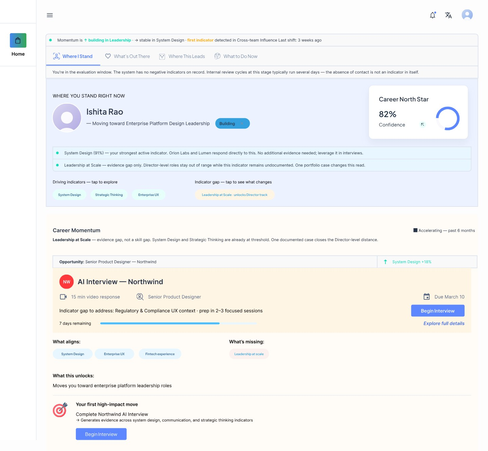

I find the missing state before it becomes a broken product.
I’m Saurabh Kumar. I design the systems behind B2B SaaS products: the states, transitions and decisions that most screens leave out.
Scroll to place the missing state
AI, then systems, roles and flows.
Four of 11 case studies, from the AI product I lead at NCG back to client workshops at Incture. Each chapter shows a different kind of design problem.
-
Chapter 1 · AI · In-house product, NCG
Career & Hiring Intelligence
Career intelligence and explainable AI, designed for both the recruiter and the candidate side.
- AI
- Systems
- Two-sided
On screen- Recruiter profile
- Where I stand

-
Chapter 2 · Systems · HPE, NCG client
RCMS for HPE
Delivery operations, built for 2,000+ employees across 8 modules, in light and dark.
- Enterprise
- Redesign
- Light and dark
In the stack- Timesheet
- Approvals
- Billing
- Projects
- Project health
- Admin
- Profile
- Geo escalations
- Every module, in dark

-
Chapter 3 · Roles · HPE, NCG client
The Hub for HPE
Employee resource groups for about 1,200 employees: one platform with five roles, on the web and as a PWA.
- Multi-role
- Web and PWA
Five roles, one platform- Member
- Club Owner
- Event Manager
- Moderator
- Admin

-
Chapter 4 · Flows · Incture client
Viatris
Pharma event sponsorship and employee benefits, shaped through client workshops.
- Enterprise
- Regulated
- Workshops
On the board- Event calendar
- Event detail
- Add a booth
- Approver remarks
- Report date
- User management

Every product has five states. Most designs draw one.
- Happy path
What most screens are designed for.
Drawn - Pending
The system is working and the person is waiting.
Often drawn - Ambiguous
Partial data, and nobody says what it means.
Rarely drawn - Failed silently
The system fails without telling anyone.
Rarely drawn - Recovered
The person knows what happened and what to do next.
Designed
States
Map every state a screen can be in, not only the happy one.
Transitions
Define what moves a person, or a system, from one state to the next.
Feedback loops
Make sure the system says what happened and why.
Decision surfaces
Put the information where the person makes the call.
About Saurabh Kumar

Most products don’t break on the happy path. They break in the states nobody drew.
I’m Saurabh Kumar, a product designer and strategist in Bengaluru. For more than 10 years, I’ve designed B2B products where someone makes a decision that matters: whether a candidate moves forward, whether a transaction clears, whether a request gets approved.
At NetConnect Global (NCG), I lead design and strategy for an in-house AI hiring and career intelligence product. The hard part was deciding what the AI should and shouldn’t do. I set the rule that no score appears without its reason, and I argued against letting the AI rank candidates on its own. The AI explains, and a person makes the final call. I also own the product’s client communication, from reporting to proposals.
Through NCG, I redesigned RCMS, HPE’s delivery operations tool for an organization of more than 2,000 employees, designed The Hub, an internal platform built for about 1,200 HPE employees, and built a Power BI design system for PwC across 50 to 60 dashboards. Before that, I was the lead designer at Incture on SAP-based apps for Viatris, Murphy Oil, Baker Hughes and Estée Lauder Companies, and at Kellton Tech I worked with IndiGo, Clix Capital and Edelweiss Tokio.
I’m looking for a more senior role, as an individual contributor or in leadership, where design is part of deciding what gets built. I’m open to hybrid or on-site roles in Bengaluru, and to remote roles that hire from India.
How I work
- Systems before screens. I start with what people are deciding and what happens if they decide wrong, then design the screens around it.
- The missing state. Pending, failed, rejected without a reason. I look for the states nobody planned for and design them before they ship.
- AI explains, people decide. An AI should show its reasoning, and the final call stays with a person.
Experience
- 2022 to nowExecutive UX DesignerNetConnect Global (NCG)Design and strategy for an in-house AI hiring product. RCMS and The Hub for HPE, and a Power BI design system for PwC.
- 2021 to 2022Senior UX DesignerIncture TechnologiesLead designer on SAP-based apps for Viatris, Murphy Oil, Baker Hughes and Estée Lauder Companies, and on Incture’s own products.
- 2017 to 2021Senior UX DesignerKellton TechIndiGo, Clix Capital, Edelweiss Tokio, Club Mahindra and DuPont, with on-site design workshops.
- 2014 to 2017UX DesignerCerno Technologies and S2LogicA legal practice management product, then an early-stage product.
- PwC
- HPE
- IndiGo
- Viatris
- Baker Hughes
- Estée Lauder Companies
- Clix Capital
- Edelweiss Tokio
- DuPont
- Club Mahindra